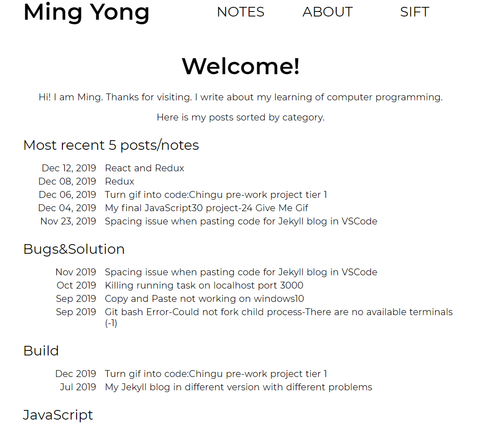
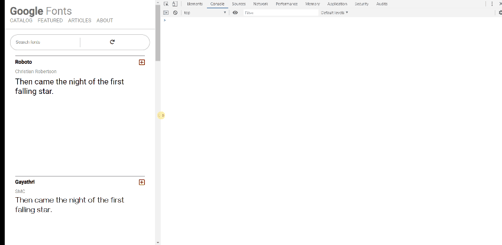
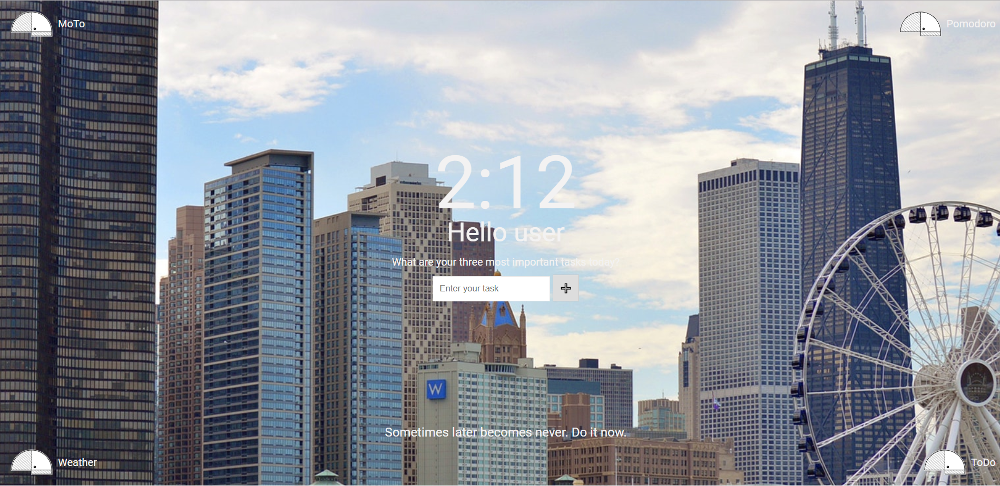

CURRENT
PROJECTS

Front-End: Learning Blog
- Is a blog where I write and apply what I've learned about computer programming.
- Built with Jekyll, HTML, CSS(SCSS and BEM), GitHub Pages and a little bit of jQuery.
- Main value: a platform for me to share and document my learning.
- Challenge faced: using Jekyll and managing a complicated file structure for the first time.
- My solution: break things down into chunks and spend more time digesting content from tutorials and documentation. Keep maintaining and updating with continuos growing knowledge(without breaking the whole thing).
- View Demo or View Code or Learn More.
Back-End: 100FreeQuestions
- Is a Twitter Bot that retweets #100FreeQuestions.
- Built with NodeJS, Twitter API "twit", Heroku.
- Main value: aggregate tech-related questions and answers for #100DaysOfCode, #freeCodeCamp, #CodeNewbie and other tech communities.
- Challenge faced: setting up and working with "twit" API.
- My solution: sifting through API documentation for desired features.
- View Demo or View Code or Learn More.

Mockup to Code: Favorite Fonts
- Is a "Google Fonts" style webpage that followed specific requirements in words, image and gif.
- Built with HTML, CSS, JavaScript, GitHub Pages.
- Main value: a pre-work solo project submission for entering Chingu voyage 13.
- Challenge faced: fulfilling requirements and deliver result on time.
- My solution: analyze features and proper planning before coding.
- View Demo or View Code or Learn More.

Collaboration: MoTo
- Is a Momentum clone with Weather forecast, M.I.T list, Pomodoro, ToDo list features.
- Built with HTML, CSS(BEM), JavaScript, jQuery, Netlify.
- Main value: a beginner-friendly Open Source experience for everybody on top of being a productivity tool.
- Challenge faced: working in a remote agile team with 3 other developers, developing a Minimum Viable Product in 6 week-long sprints.
- My solution: provide and receive constructive feedback to develop an efficient workflow.
- View Demo or View Code or Learn More